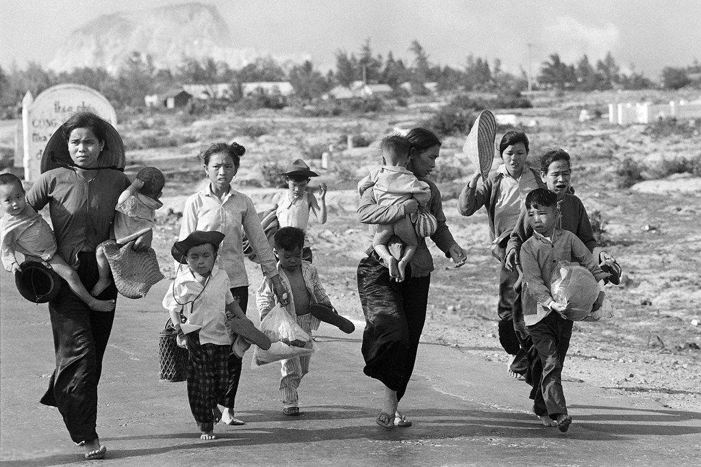
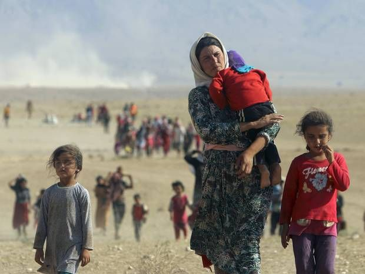
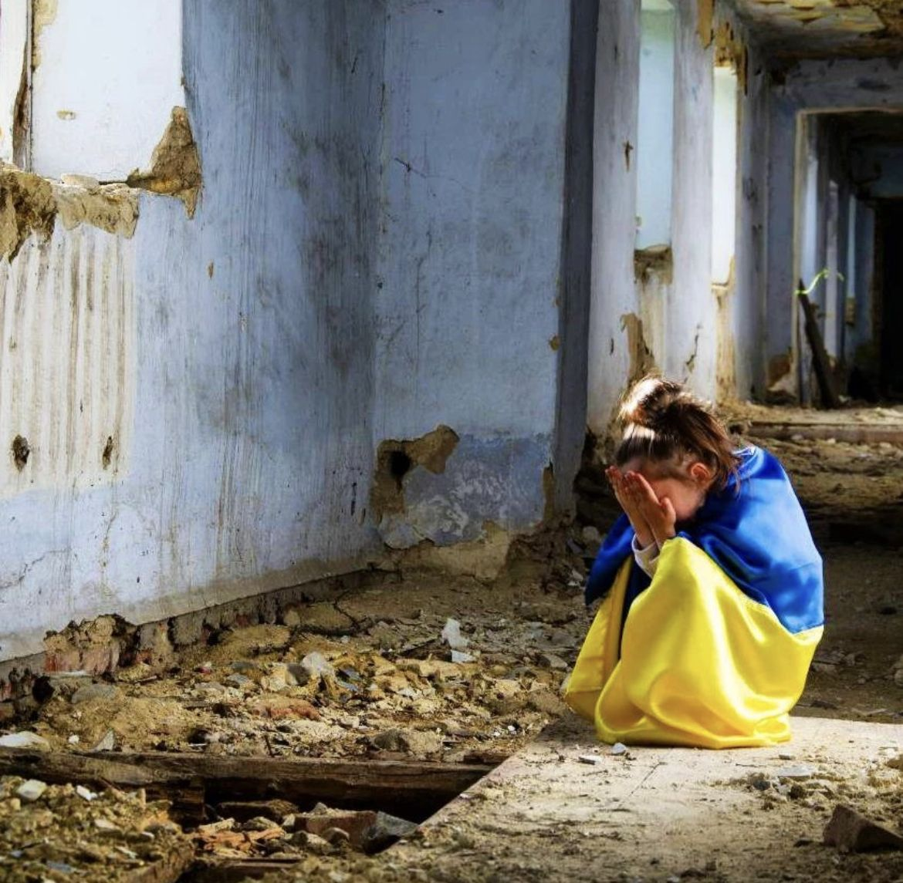
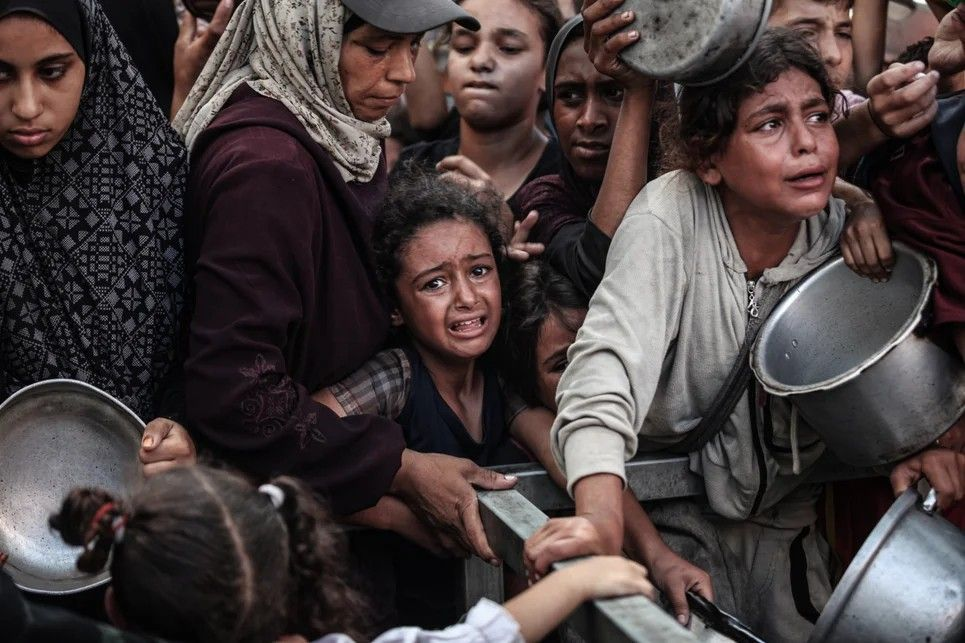
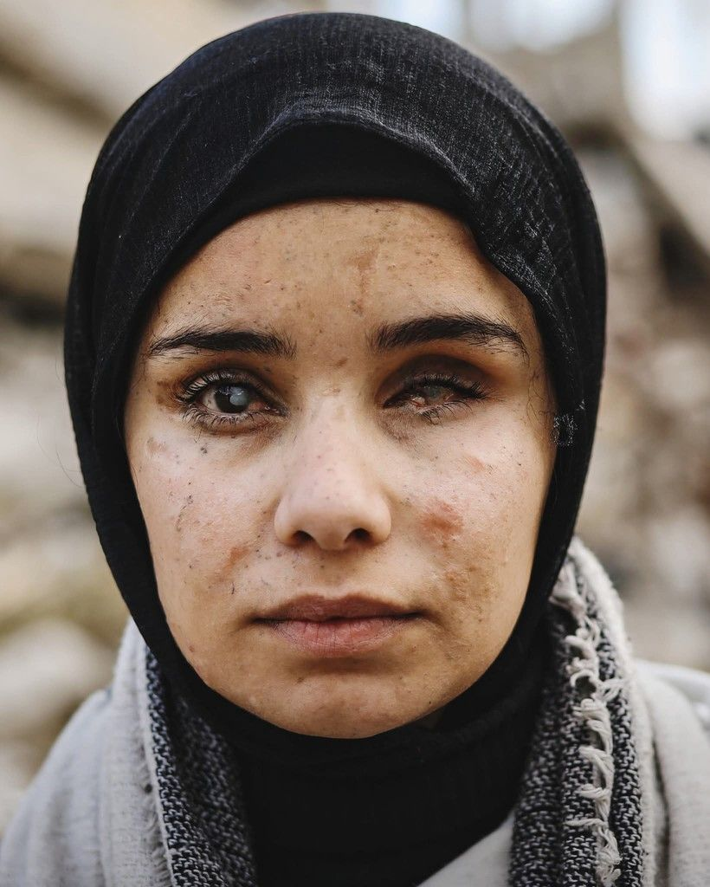

CHAPTER 01 / THE REALITY
War takes home.
Not her humanity.
Her rights have no borders.
An intimate look at women’s lives in conflict and displacement.
Beyond the headlines. Beyond the numbers. Never beyond hope.
WHAT WAR TAKES
She carries more
than a suitcase.
A home. A profession. A familiar street. The right to feel safe.
Displacement disrupts the everyday things that make a life
one's own-and the loss does not end at the border.
Women are not only survivors of conflict.
They are caregivers, organizers, leaders-and themselves.
01
Safety is not a given.
Violence, exploitation and interrupted healthcare can follow women along routes of displacement.
02
Home is more than shelter.
Family separation, lost livelihoods and disrupted education can reshape years of a woman's life.
03
Survival is not the whole story.
Women sustain communities and lead responses. Their decisions belong at the centre of recovery.
HISTORY IS NOT BEHIND US
Different borders.
The same human cost.
CHOOSE A CONFLICT BELOW
Historical snapshots - not live totals
| 1994 | 2011 | 2022 | APR 2023 | OCT 2023 |
| Rwanda | Syria | Ukraine | Sudan | Palestine |

RWANDA
- Women killed: No confirmed gender-specific figure.
- Women displaced: No confirmed figure.
- Women subjected to sexual violence: 100,000–250,000

SYRIA
- Women and girls killed: 29,358+
- Women and girls injured: Not confirmed
- Women displaced: Not confirmed

UKRAINE
- Women and girls killed: 5,955+
- Women and girls injured: 20,649+
- Women displaced: Millions of women and families

SUDAN
- Women and girls killed: Not confirmed
- Women and girls injured: Not confirmed
- Women and girls displaced: 4.3 million+ i

PALESTINE
- Women and girls killed: 38,000+
- Women and girls injured: 172,202
- Women and girls displaced: Nearly 1 million.
Not a ranking of suffering.

MORE THAN A STATISTIC
Not voiceless.
Too often unheard.
A number can reveal the scale of a crisis. It cannot tell you who she was before it-or who she wants to become.
To understand displacement, we need to listen without reducing a woman to the worst thing that happened to her.